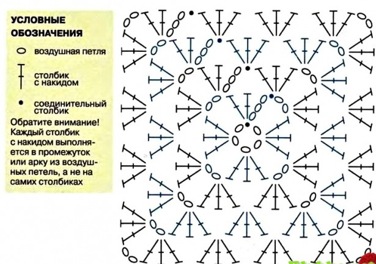
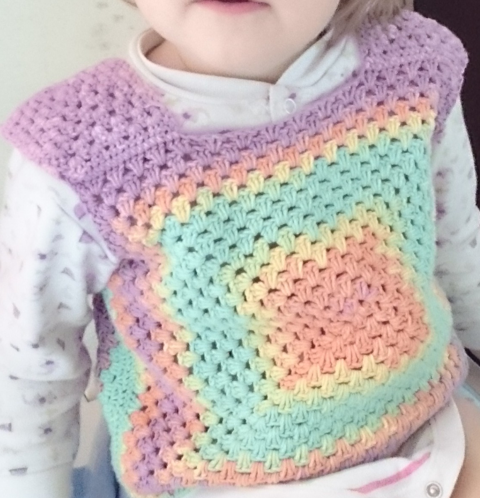
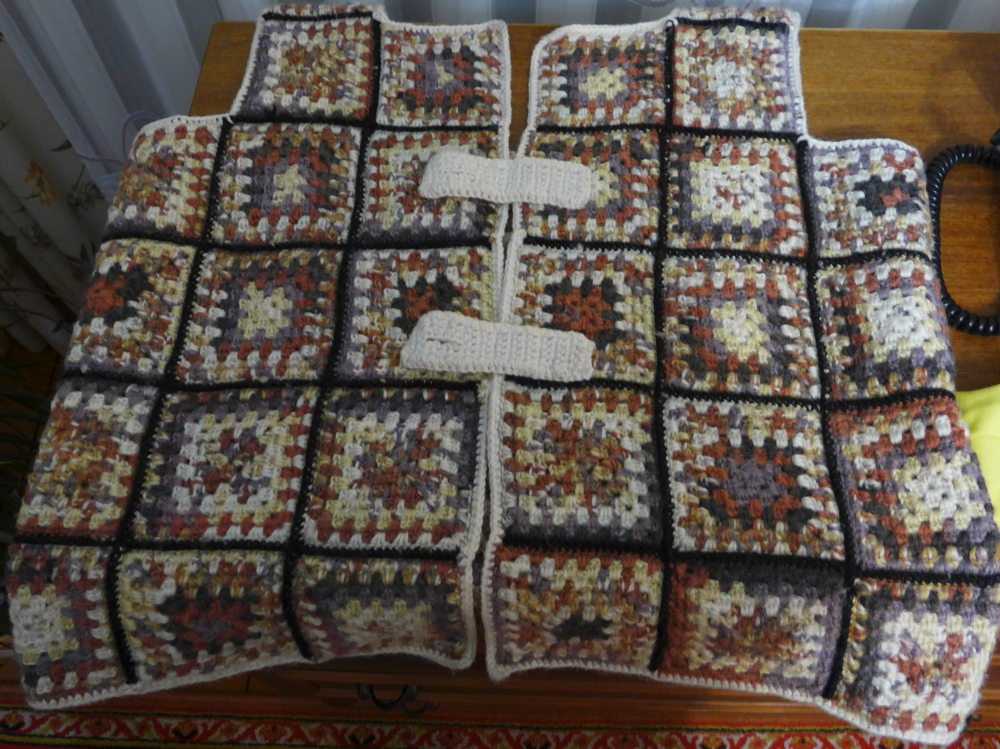

Жилетка
Узор
Схема вязания "бабушкиного квадрата"

Крючком 3,5 мм и нитью А связать 5 в. п., соед. ст. в 1-ю. в. п., чтобы замкнуть кольцо.
1-й КРУГ: нитью А связать 3 в. п., в кольцо связать 2 ст. с/н, 2 в. п.; повт. от * 2 раза, соед. ст. в верхнюю из 3 в. п. Закрепить нить.
2-й КРУГ: присоединить нить В к арке из 2 в. п. с помощью соед. ст., (3 в. п., 2 ст. с/н, 2 в. п., 3 ст. с/н) в ту же арку, * в след. арку (3 ст. с/н, 2 в. п., 3 ст. с/н); повт. от * 2 раза, соед. ст. в верхнюю из 3 в. п. Закрепить нить.
3-й КРУГ: присоединить нить С с помощью соед. ст. к арке из 2 в. п., (3 в. п., 2 ст. с/н, 2 в. п., 3 ст. с/н) в ту же арку, 3 ст. с/н в промежуток между группами из 3 ст. с/н, * (3 ст. с/н, 2 в. п., 3 ст. с/н) в след. арку, 3 ст. с/н в промежуток между группами из 3 ст. с/н; повт. от * еще 2 раза, соед. ст. в верхнюю из 3 в. п. Закрепить нить.
4-й КРУГ: присоединить нить D к арке из 2 в. п. с помощью соед. ст., (3 в. п., 2 ст. с/н, 2 в. п., 3 ст. с/н) в ту же арку, [3 ст. с/н в промежуток между группами из 3 ст. с/н] 2 раза, * (3 ст. с/н, 2 в. п., 3 ст. с/н) в след. арку, [3 ст. с/н в промежуток между группами из 3 ст. с/н] 2 раза, повт. от * 2 раза, соед. ст. в верхнюю из 3 в. п. Закрепить нить.
Кайма
По лиц. стороне крючком толщиной 3,5 мм и нитью D вязать по кругу:
1-й КРУГ: начать с угловой арки, 4 в. п., 1 ст. б/н в ту же арку, * 3 в. п., 1 ст. б/н в след. в. п.; повт от * до след. угла, (1 ст. б/н, 3 в. п., 1 ст. б/н) на углу. Обвязать остальные 3 стороны так же; закончить: соед. ст. в 1-ю в. п.
2-й КРУГ: в новую угловую арку вязать (2 ст. б/н, 1 пико, 2 ст. б/н), в каждую арку (2 ст. б/н, 1 пико, 2 ст. б/н); закончить: соед. ст. в первый ст. б/н. Закрепить нить.
Варианты
- "Броник" Два больних квадрата (спереди и сзади) и 2 маленьких (плечики).
 - Много маленьких соединенных вместе по схеме.
00100100
00100100
11111111
11111111
11111111
 - Тапки из квадратов

Comments
comments powered by Disqus